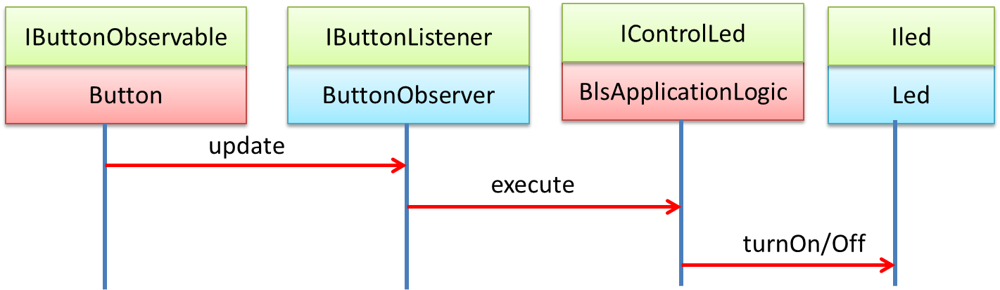

72939 - LAB2 | ButtonLedSystem with Physical devices
LabSS-lectures site
REQUIREMENTS
Extend the
BLS system
Lab1.html (built with reference to
Mock and
GUI devices),
by introducing a
Physical Led and a
Physical Button controlled by the
Arduino
microcontroller.
STARTING POINT
A local solution for the
BLS system running on
Arduino can be easily found on the network.
There are technical,
technology-dependent problems to face (e.g. interact with a very fast micro-controller, avoid signal bouncing, etc.) but
a possible solution can be:
bls2019LocalOnArduino.ino.
Beyond Arduino
However, our goal here is not to create an ad-hoc solution for
Arduino, but to build a
BLS system where some specific
physical device component (in our case either the
Led or the
Button or both) can be handled by
Arduino, while the business
logic remains on a conventional
PC.
A fundamental question: is it possible to face the BLS system problem (in general any problem) in a
technology-independent way?.
At the moment, since we have to start from the system introduced in
Lab1.html,
it is useful to build a
model
of that system, to recall its properties from three different points of view:
structure, interaction and behavior.
MODELS in SOFTWARE
In
we read that
"perhaps the most fundamental concept in systems modeling is
abstraction,
which concerns hiding unimportant details in order to
focus on essential characteristics".
It is useful to have a common way to talk about the concepts underlying the many different types of models
(e.g., many modeling techniques enable the understanding of system behavior, while others enable the understanding of
system structure). In our approach a relevant aspect is related to interaction, since
we are moving from the traditional interaction based on procedure-calls among system components towards interaction based on
message-passing.
A logic architecture for the BLS
As already, proposed in
Lab1.html, the following
UML interaction diagram
can give us a summary of our model of the current software system:

This model can be adopted as a representation of the
logic architecture of our
BLS system.
It is technology-aware (since it is based on objects) but it is also quite technology-independent since there is no
reference to the implementation details of the components.
In particular, the devices (Button and Led) are software components that can represent either
virtual or real devices. The architecture defines the relationships with the other components, in particular with the
BusinessLogic.
MVC?
We could consider if proposed architecture is related to the architectural pattern known as
MVC
(
Model–View–Controller).
The answer is left to the reader, but - first of all - we have to define in a precise way the meaning of the
term
Model.
At the moment, with a more detailed description of the available software, we can say that:
Structure
Our system is composed of three main software components:
- A Button device that implements the interface
IButtonObservable.
- A Led device that implements the interface
Iled.
- A Controller that embeds the business logic and implements the interface
IControlLed.
A software device component can be created by means of a
DeviceFactory
tha works according to a set of device types defined in LedType and
ButtonType. Moreover:
- At creation time, each software device does not know any other device. However, a reference to the Led is 'injected'
at system configuration time into the BusinessLogic.
(see connectTheComponents in MainBlsMockBase).
- Since the Button is defined as an observable entity, the system does introduce an observer of the Button
of class ButtonObserver. This component acts as a 'glue'
between the Button and the BusinessLogic.
- The Controller (i.e. the
BlsApplicationLogic)
is 'injected' at system configuration time into the ButtonObserver
(see connectTheComponents in MainBlsMockBase).
Interaction
Since the system is based on 'classical' object programming, the interaction among the components takes place via
procedure-calls.
Behavior
The
BlsApplicationLogic
component activates (when created) an internal
Thread that blinks the
Led
while an internal variable (
doBlink) is true. When
doBlink is false, this
Thread waits.
A new flow of control begins each time the Button is 'clicked'. This control-flow activates the execute operation
of the BlsApplicationLogic.
that modifies the state of the variable doBlink. This state-change is 'notified' (by using a
synchronized statement related to a
monitor object) to wake
the blinking Thread.
The BusinessLogic is also implemented in Kotlin-based version
(BlsApplicationLogic.kt)
that avoids Thread contention on shared memory.
System creation/configuration
The internal organization of the main program
MainBlsMockBase is based on a set of
operations that logically capture the
basic steps required to set-up a software system:
- createTheComponents : this operation creates the objects that represents the components of the system.
- connectTheComponents : this operation 'injects' references to the components in order to create a local network
of interrelated objects.
- startTheSystem : this operation puts in execution the system. In this case, it is sufficient to
add the ButtonObserver to the Button,
since the Button is logically a component with its own Thread of control.
These operations are highly reusable, as shown by the given:
MainBlsGuiBase.java
WHAT WE CAN DO
Our main goal here could be tat of reusing the given code as much as possible. Let us propose a work-plan:
- Serial line::
A conventional PC can exchange information with Arduino by means of a Serial line connected to an USB port.
Let us introduce an utility to facilitate this task:
JSSCSerialComm.java.
Note that the jssc linrary allows us to handle Arduino as an observable device that calls the operation
serialEvent when it writes on the Serial line.
- Proxy objects::
Since the Led or/and the Button are now physical devices handled by Arduino, we can make reference to the
Proxy pattern in order to:
- Led:: send a proper command to Arduino each time the Led must change its state:
LedProxyArduino.java
- Button:: receive information from Arduino each time the physical Button changes its state ('clicks'):
ButtonProxyArduino.java.
Note that the receiver is introduced as a Thread created by the ButtonProxyArduino constructor.
- Arduino code:: The code running on Arduino must able to execute two main operations:
- readAndExecCmd:: read a command sent by the PC and execute such a command.
- sendButtonState:: send to the PC information about the state of the Button
A possible implementation is: bls2019.ino. Note that:
- the command language from PC to Arduino is defined by a simple char:
0 | 1
- the messages sent by Arduino on the serial line to the PC, are Strings of the form:
msg(info,event,arduino,none,LEDSTATE,NUM) LEDSTATE=true|false, NUM=naturalnum
We will discuss and understand these choices later, in our forthcoming labs.
- DeviceFactory:: We should extend the DeviceFactory
to handle new types of devices, related to Arduino.
- System creation:: We should specialize the original main program
MainBlsMockBase.java:
Final considerations
- The classes LedMock
and ButtonMock
can be re-used - by means of the Java inheritance - in order to introduce different types of devices.
- The class MainBlsMockBase.java can
be reused - by means of the Java inheritance - to build the BLS system. The only thing to do
is to override the method setDeviceTypes.
Now, we could consider the possibility to re-factor the system, so to define a reusable framework for BLS applications
that can be specialized without recurring to inheritance.